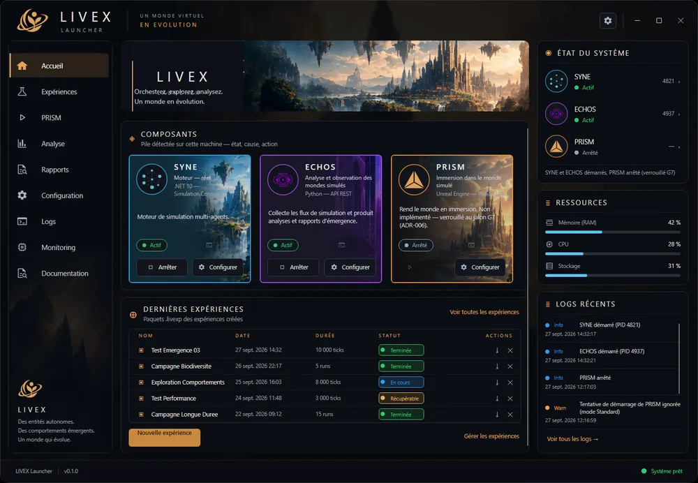
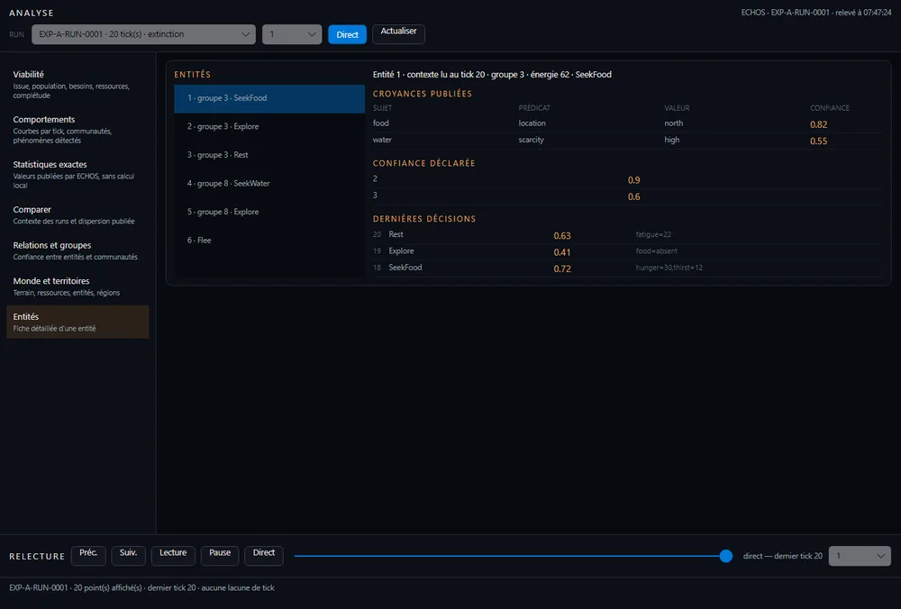

Page personnelle de l’auteur
Développeur web fullstack & mobile, artiste 3D.
Vous êtes sur la page de Donovan Chartrain, auteur de LIVEX, un projet personnel de recherche en simulation multi-agents. Le projet a son propre site : présentation, documentation, téléchargements et journal s’y trouvent.
Une archive vivante d’un monde simulé.
Beaucoup de simulations jouent une séquence prévue : on y voit ce qu’on y a mis. LIVEX vise l’inverse. Il pose des agents, des règles et un environnement, puis laisse faire et enregistre ce qui se produit, y compris l’inattendu.
Son sujet est l’émergence collective faible : des motifs de groupe issus d’interactions locales dont les causes restent traçables. LIVEX ne prend pas l’apprentissage individuel d’un agent pour objet de recherche.
Déterministe
À partir de la même graine, un run se rejoue à l’identique, tick après tick. Ce qui est observé peut être vérifié et reproduit.
Séparé
Ce qui se passe dans le monde (le moteur) et ce qu’on en dit (l’observation) ne se confondent jamais, sous peine de raconter ce qu’on espérait voir.
Trois temps, trois composants.
Simuler : SYNE
Systems & Emergent Network Engine
Moteur déterministe de simulation multi-agents : règles, monde, ticks et rejouabilité à partir d’une graine. Il porte la cognition des agents et l’horloge maîtresse.
Observer : ECHOS
Emergent Cognition & Holistic Observation System
Ingère les traces d’un run et en tire des mesures : viabilité, détection de boucles et de motifs émergents. Il observe sans jamais intervenir sur le monde.
Rendre visible : PRISM
Persistent Reality & Interactive Simulation Module
Donne à voir le monde par le rendu et l’interaction. Cible V2 : monde voxel 2.5D autoritaire, noyau .NET headless et visualiseur Silk.NET facultatif.
Le Launcher (0.1.0, application de bureau) orchestre les composants, et un installateur permet d’installer, de mettre à jour et de réparer LIVEX.


Des faits datés, pas des promesses.
Les valeurs ci-dessous décrivent l’état du dépôt, pas une promesse de publication. Les agents de LIVEX sont des entités simulées, pas des personnes, et le projet ne prétend ni prédire ni reproduire le réel.
- Version publiée
- V1.0.0, 30 octobre 2026
- Version cible
- V2.0.0 : PRISM refondu en autorité du monde physique, SYNE recentré sur la cognition (en préparation)
- Tests
- 1 566 tests, dont 1 550 réussis, 16 ignorés, 0 échec (4 novembre 2026)
- Couverture
- ECHOS 91,32 %, SYNE 81,20 %
- Plateformes
- Windows validé depuis le 8 octobre 2026
Un chemin selon votre question.
Un profil hybride.
Plus de 3 ans de développement web en entreprise et plus de 10 ans de design, de 3D et de production visuelle : deux faces d’un même problème, représenter un monde et construire ce qui le fait fonctionner.
Portfolio web — développement
Applications web et mobiles, architecture, stack technique et projets clients. Profil développeur fullstack & mobile.
donovan-dev-web.vercel.appPortfolio 3D — création et expériences
Direction créative, visualisation 3D, expériences interactives et supports de présentation immersifs.
donovan-dev3d.vercel.appPlus de 20 projets réalisés (sites web, applications, 3D), en contexte professionnel et personnel. Pour me contacter, utilisez le formulaire de contact de mon portfolio web.
Découvrir LIVEX
Comprendre la méthode, vérifier la technique, suivre l’avancement.